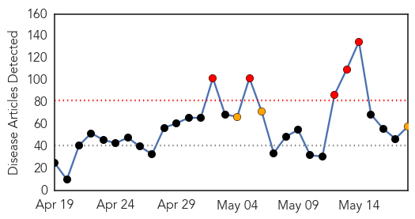
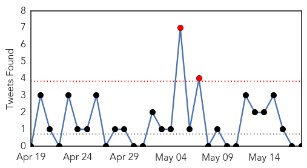
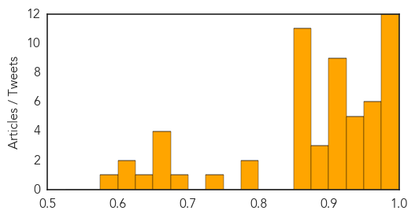
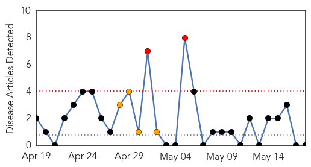

Unknown
30-Day Web Trend
5 alerts, 3 warnings

30-Day Twitter Trend
2 alerts, 0 warnings

Article Locations
Article Confidences
Top Articles:
- 1.000
- Silently among us: Scientists worry about milder cases of MERS
- 0.999
- US reports third case of MERS virus
- 0.999
- First Case of MERS Transmission Reported in U.S
- 0.999
- US reports third case of MERS virus
- 0.999
- 3rd MERS case confirmed in US
- 0.997
- CDC: MERS virus has spread in U.S.; second man feeling well
- 0.995
- MERS Update: All workers and family test negative
- 0.992
- Illinois man tests positive for MERS virus without falling ill
- 0.992
- Deadly MERS virus could come to St. Louis
- 0.991
- Illinois Man Infected by Indiana man with MERS but is No Longer Sick
- 0.987
- MERS cases drop in KSA; alarm over medics becoming carriers
- 0.979
- MERS Appears To Spread With Business-Meeting Contact : NPR
- 0.973
- CDC reports first person-to-person US MERS Transmission.
- 0.971
- Must be super vigilant against rising superbugs
- 0.970
- Contaminated Zim tap water kills 328
- 0.969
- Details of Illinois MERS patient emerge
- 0.958
- Another MERS case reported in the U.S.
- 0.952
- Foreign doctors, nurses in Saudi Arabia could take MERS global
- 0.948
- Foreign doctors, nurses in Saudi Arabia could take MERS global
- 0.948
- Foreign doctors, nurses in Saudi Arabia could take MERS global
- 0.947
- Foreign doctors, nurses in Saudi Arabia could take MERS global
- 0.947
- Foreign doctors, nurses in Saudi Arabia could take MERS global
- 0.945
- Foreign doctors, nurses in Saudi Arabia could take MERS global
- 0.917
- Chicago Tribune
- 0.917
- Chicago Tribune
- 0.917
- Chicago Tribune
- 0.917
- Chicago Tribune
- 0.915
- The CDC reports a third MERS case in the U.S.
- 0.910
- Foreign medics in Saudi Arabia may take MERS global
- 0.910
- The world windows to Thailand
- 0.907
- Elderly residents in dark over virus - national
- 0.907
- Foreign doctors, nurses in Saudi Arabia could take MERS global
- 0.891
- CMV Virus could Prove Fatal for Infants
- 0.889
- Health Officials Report First U.S. Person-to-Person MERS Transmission
- 0.876
- Silent virus CMV a rare but dangerous risk for the unborn
- 0.872
- Farsnews
- 0.868
- Irish man gets ‘all clear’ after deadly MERS virus fears
- 0.866
- S.Korea's Park apologises for ferry disaster, says to break up coast guard
- 0.866
- Unknown attackers fire rockets at Benghazi's airport -security source
- 0.866
- Two people killed, 55 wounded in clashes in Libyan capital-minister
- 0.866
- Eight murdered in Tuareg assault on Mali governor's office
- 0.866
- Forces of renegade Libyan general demand parliament hand over power
- 0.866
- Three suspects remanded in custody in Turkey mine investigation
- 0.866
- Gunmen storm Libyan parliament, raid offices of lawmakers
- 0.866
- Egypt court jails 126 Brotherhood supporters
- 0.866
- Mali "at war" with northern Tuareg separatists
- 0.795
- Foreign doctors, nurses in Saudi Arabia could take MERS global
- 0.787
- Lyme disease diagnosis a battle in Quebec, patients say
- 0.733
- Silent virus a rare, dangerous risk for the unborn
- 0.688
- Bill protecting longer Lyme treatments is before Senate
Showing top 50 articles...
Top Tweets:
-
No tweets found for May 18, 2014
Pertussis
30-Day Web Trend
2 alerts, 4 warnings

30-Day Twitter Trend
0 alerts, 0 warnings

Article Locations

Article Confidences

Top Articles:
-
No articles found for May 18, 2014
Top Tweets:
-
No tweets found for May 18, 2014